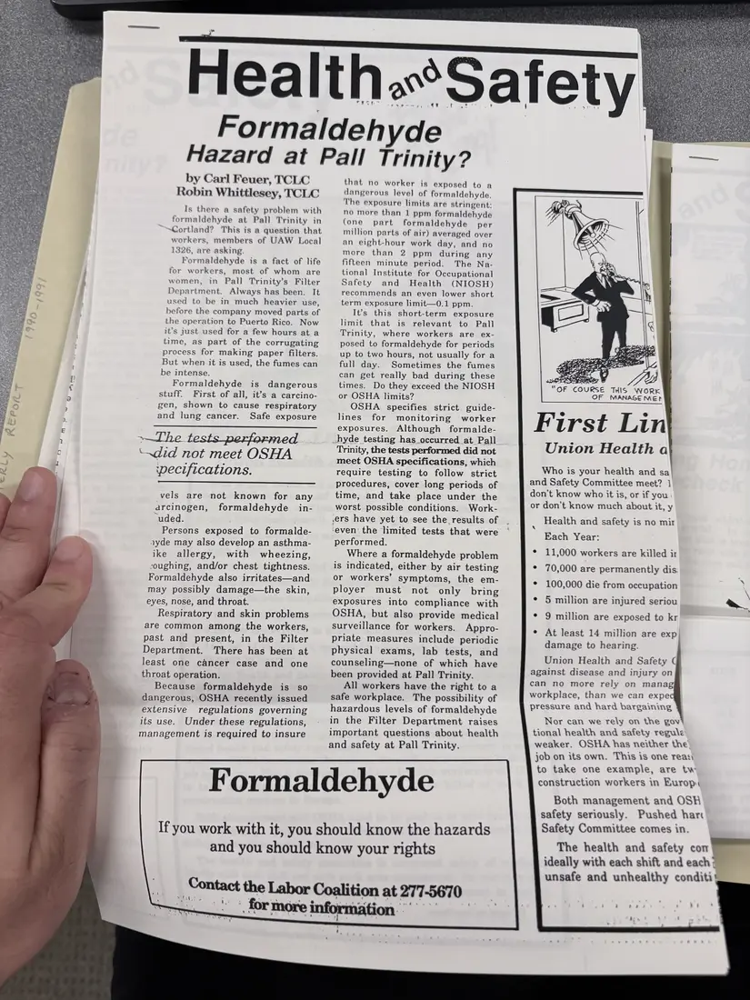

Newsletter, 1 page
“Formaldehyde Hazard at Pall Trinity?”
[c. 1990–1991]Approximate date
A Health and Safety page article asking whether formaldehyde is a hazard for UAW Local 1326 members at Pall Trinity in Cortland, noting that the tests performed there did not meet OSHA specifications. A box explains formaldehyde's health effects.
A second photograph of this page is not shown.
Download or cite this itemPages


(open zoom view)Read the page text (machine-read, mostly readable)
This text was generated automatically from the photograph and has not been corrected. The image is the authoritative record.
Health.°Safety Formaldehyde Hazard at Pall Trinity? by Carl Feuer, ICLG that no worker is exposed to a Robin Whittlesey, ROE dangerous level of formaldehyde. The exposure limits are stringent: Is there a safety problem with no more than 1 ppm formaldehyde formaldehyde at Pall Trinity in (one part formaldehyde per “Cortland? This is a question that workers, members of UAW Local 1326, are asking. Formaldehyde is a fact of life for workers, most of whom are million parts of air) averaged over an eight-hour work day, and no more than 2 ppm during any fifteen minute period. The Na- women, in Pall Trinity’s Filter Department. Always has been. It used to be in much heavier use, before the company moved parts of the operation to Puerto Rico. Now it’s just used for a few hours at a time, as part of the corrugating process for making paper filters. But when it is used, the fumes can be intense. Formaldehyde is dangerous stuff. First of all, it’s a carcino- gen, shown to cause respiratory and lung cancer. Safe exposure »—The_tests_performed ‘did not meet OSHA ‘pecifications. vels are not known for any arcinogen, formaldehyde in- “uded. Persons exposed to formalde- ayde may also develop an asthma- ike allergy, with wheezing, ‘oughing, and/or chest tightness. Formaldehyde also irritates—and may possibly damage—the skin, eyes, nose, and throat. Respiratory and skin problems are common among the workers, past and present, in the Filter Department. There has been at least one cancer case and one throat operation. Because formaldehyde is so dangerous, OSHA recently issued extensive regulations governing its use. Under these regulations, management is required to insure vous Formaldehyde If you work with it, you should know the hazards and you should know your rights Contact the Labor Coalition at 277-5670 ~~. formore information“ tional Institute for Occupational Safety and Health (NIOSH) recommends an even lower short term exposure limit—0.1 ppm. It’s this short-term exposure limit that is relevant to Pall Trinity, where workers are ex- posed to formaldehyde for periods up to two hours, not usually for a full day. Sometimes the fumes can get really bad during these times. Do they exceed the NIOSH or OSHA limits? OSHA specifies strict guide- lines for monitoring worker exposures. Although formalde- _hyde testing has occurred at Pall Trinity, the tests performed did not meet OSHA specifications, which require testing to follow strict procedures, cover long periods of time, and take place under the worst possible conditions. Work- ,ers have yet to see the results of ‘even’ the limited tests that were performed. Where a formaldehyde problem is indicated, either by air testing or workers’ symptoms, the em- ployer must not only bring exposures into compliance with OSHA, but also provide medical surveillance for workers. Appro- priate measures include periodic physical exams, lab tests, and counseling—none of which have been provided at Pall Trinity. All workers have the right to a safe workplace. The possibility of hazardous levels of formaldehyde in the Filter Department raises important questions about health and safety at Pall Trinity. "OF COURSE THIS WoRK OF MANAGE Mer First Lin Union Health a Who is your health and sa and Safety Committee meet? 1] don't know who it is, or if you or don't know much about it, y Health and safety is no mir Each Year: ¢ 11,000 workers are killed ir ¢ 70,000 are permanently dis: ¢ 100,000 die from occupation », ¢ 5 million are injured seriou ~ ¢ 9 million are exposed to kr ¢ At least 14 million are exp damage to hearing. Union Health and Safety ( against disease and injury on can no more rely on manag workplace, than we can expe pressure and hard bargaining Nor can we rely on the gov tional health and safety regule: weaker. OSHA has neither the job on its own. This is one reas) to take one example, are tw construction workers in Europy Both management and OSH safety seriously. Pushed har Safety Committee comes in. The health and safety o— ideally with each shift and each? unsafe and unhealthy conditi*
See something wrong, or recognize a person or event? Send a correction. If you hold rights in this item or think it should not be public, write to the same address.